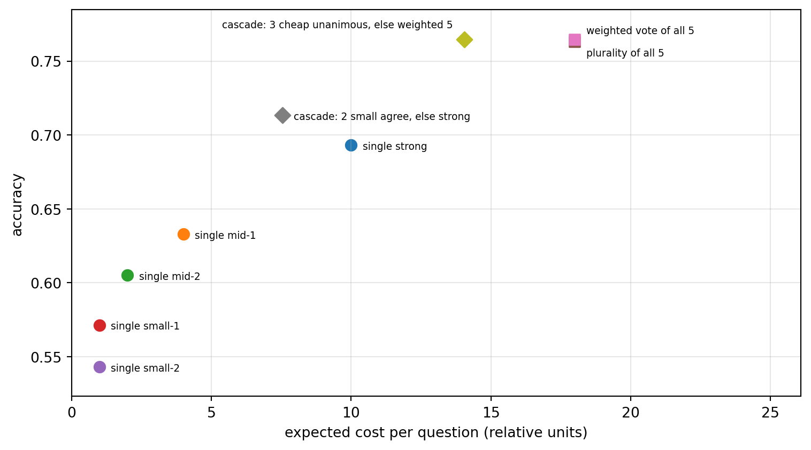

Ensembling is one of the oldest reliable tricks in machine learning. A committee of models that err in different ways is more accurate than its average member, and often more accurate than its best member (Dietterich 2000). Large language models revived the idea in a new form. Instead of averaging numeric predictions, an LLM ensemble can collect several free-text answers and hand them to another model that reads, critiques, and synthesizes them. The most influential recipe of this kind is Mixture-of-Agents (MoA), in which layers of “proposer” models each see the previous layer’s answers and a final “aggregator” writes the response (Wang et al. 2025). Using only open-weight models, MoA outperformed a leading proprietary model on instruction-following benchmarks at the time of publication.
The idea is attractive and easy to overuse. Every additional model call multiplies cost, and every additional layer adds latency in series. Whether the extra calls buy accuracy depends on how different the members’ errors are and on whether the aggregator can tell good answers from bad ones. This chapter develops the architecture, the statistics of why ensembles help and when they stop helping, and the cost and latency arithmetic that decides whether an ensemble is worth deploying. It complements three other parts of the book. Chapter 241 covers agents that collaborate through roles and debate, Section 241.7 asks when routing among agents is meaningful, and Section 262.3.3 treats self-consistency, the special case in which every voter is the same model sampled several times.
247.1 The Architecture
247.1.1 Proposers and aggregators
An MoA system has \(L\) layers. Layer \(l\) contains \(n_l\) agents \(A_{l,1}, \dots, A_{l,n_l}\), each an LLM call with its own model and prompt. Write \(x\) for the user prompt and \(\oplus\) for concatenation into a context. The first layer answers the prompt directly, and each later layer answers with the previous layer’s outputs in context: \[
y_{1,i} = A_{1,i}(x), \qquad
y_{l,i} = A_{l,i}\big(x \oplus y_{l-1,1} \oplus \cdots \oplus y_{l-1,n_{l-1}}\big), \quad l = 2, \dots, L .
\] The final answer comes from a single aggregator that sees the last layer, \(\hat{y} = A_{\text{agg}}(x \oplus y_{L,1} \oplus \cdots \oplus y_{L,n_L})\). In the original paper the intermediate agents receive an “aggregate and synthesize” system prompt that asks them to critically evaluate the provided responses, recognize that some may be biased or incorrect, and produce a single refined answer rather than copy any one of them.
Wang et al. (2025) report a “collaborativeness” effect: models tend to produce better answers when shown other models’ answers, even when those answers are individually weaker than what the model would write alone. They also found that some models are better proposers (they produce useful, diverse raw material) while others are better aggregators (they are good at judging and merging), so the two roles should be filled by measurement, not by reputation.
247.1.2 Relatives
MoA sits in a family of designs that differ in how answers are combined.
Voting. Sample several answers, extract a discrete final answer from each, and take the most common one. Self-consistency is voting over samples of one model (Wang et al. 2023). Voting needs answers that can be compared exactly, such as a number, a label, or a multiple-choice letter.
Rank then fuse. LLM-Blender first uses a pairwise ranker to order candidate answers and then a generative fuser to merge the top few (Jiang et al. 2023). This separates the judging step from the writing step.
Debate. Several instances answer, read each other’s answers, and revise over a few rounds until they converge (Du et al. 2024). Debate is MoA in which every layer contains the same agents.
Routing and cascades. Instead of calling everyone, choose one model per query. A router predicts which model will do well enough (Ong et al. 2025), and a cascade calls a cheap model first and escalates only when a confidence check fails (Chen et al. 2024a). These designs aim at the same quality frontier from the cost side.
247.2 Why Ensembles Help: The Statistics of Voting
The cleanest way to see when combining answers works is to study voting on questions with a single correct answer. The lessons transfer to MoA because an aggregator that synthesizes answers is, among other things, an implicit voter.
247.2.1 Independent voters
Suppose \(n\) voters answer a binary question independently, each correct with probability \(p > \tfrac12\). The majority is correct with probability \[
P_{\text{maj}}(n) = \sum_{k > n/2} \binom{n}{k} p^k (1 - p)^{n - k},
\] which increases to one as \(n\) grows. This is the Condorcet jury theorem, and it is the optimistic case behind every ensemble.
247.2.2 Correlated voters
LLMs are not independent voters. They are trained on overlapping corpora with similar objectives, so they share blind spots and fall for the same distractors. Let \(c_i \in \{0, 1\}\) indicate whether voter \(i\) is correct, with common accuracy \(p\) and pairwise correlation \(\rho\) between any two indicators. The fraction of correct votes \(\bar{c} = \frac1n\sum_i c_i\) has variance \[
\operatorname{Var}(\bar{c}) = \frac{p(1-p)}{n}\big[1 + (n - 1)\rho\big] = \frac{p(1-p)}{n_{\text{eff}}},
\qquad
n_{\text{eff}} = \frac{n}{1 + (n - 1)\rho} .
\] As \(n \to \infty\), the effective number of voters tends to \(1/\rho\), not infinity. With a correlation of one half, a committee of any size is worth about two independent voters. Ladha (1992) proves versions of the jury theorem under correlated votes and shows that shared information is the typical source of the correlation. The practical consequence is that diversity of errors matters more than the number of members, which is also the conclusion of the classifier-ensemble literature (Kuncheva and Whitaker 2003).
247.2.3 Weighted voting
Members of an LLM ensemble differ in accuracy. Treating a strong and a weak model as equal votes wastes information. Suppose there are \(K\) answer options, voter \(i\) is correct with probability \(p_i\), and when wrong it picks among the \(K - 1\) wrong options uniformly. Given votes \(v_1, \dots, v_n\), the log-likelihood that option \(a\) is correct is \[
\log P(v_1, \dots, v_n \mid a) = \sum_{i=1}^{n}\Big[\mathbb{1}[v_i = a]\log p_i + \mathbb{1}[v_i \neq a]\log\frac{1 - p_i}{K - 1}\Big]
= \sum_{i=1}^{n} \mathbb{1}[v_i = a]\, w_i + \text{const},
\] with \[
w_i = \log\frac{(K - 1)\, p_i}{1 - p_i} .
\] So the maximum likelihood answer is a weighted vote with log-odds weights. For \(K = 2\) this is the classical optimal rule of Nitzan and Paroush (1982). A voter at chance level (\(p_i = 1/K\)) gets weight zero, and a very reliable voter can outvote several weak ones. The weights need estimates of \(p_i\). With a small labeled calibration set they are simple frequencies, and without labels they can be estimated jointly with the latent true answers by EM in the Dawid and Skene (1979) model, the same idea that powers label aggregation in crowdsourcing.
247.2.4 Where MoA goes beyond voting
Voting can only pick an answer that some member produced and can only compare answers that can be checked for exact equality. An aggregator LLM can do two things a vote cannot. It can recognize a correct minority answer from the content of the reasoning, and it can merge partial answers into a better one than any member wrote. The probability that at least one member is correct, \[
P_{\text{any}} = 1 - P(\text{all members wrong}),
\] is the ceiling for any aggregator that selects rather than creates. The gap between \(P_{\text{any}}\) and the voting accuracy is the headroom a good aggregator can capture. It is also the headroom a bad aggregator can waste, because judging which answer is right is itself an LLM task with known biases toward position, length, and its own style (Zheng et al. 2023).
247.3 A Simulation: Correlated Answerers and Aggregation Rules
The simulation below makes these formulas concrete. Five simulated “models” of different strength answer four-option questions. Each question has a latent difficulty that lowers every model’s chance of being right, which correlates their correctness, and a shared “trap” distractor that wrong answers gravitate toward with probability \(\rho\), which correlates their errors. We compare the best single model, plurality vote, log-odds weighted vote with weights estimated on a small labeled calibration split, and the any-correct ceiling.
Code
import numpy as npimport pandas as pdimport matplotlib.pyplot as pltpd.set_option("display.width", 120)K =4# answer options; option 0 is correctbase_acc = np.array([0.72, 0.66, 0.62, 0.58, 0.55]) # nominal accuracies of five modelscost = np.array([10.0, 4.0, 2.0, 1.0, 1.0]) # relative cost per callnames = ["strong", "mid-1", "mid-2", "small-1", "small-2"]n_models =len(base_acc)def logit(p):return np.log(p / (1- p))def simulate(n_q, rho, difficulty_sd=1.0, seed=0):"""Return an (n_q, n_models) array of chosen options (0 is correct).""" rng = np.random.default_rng(seed) difficulty = rng.normal(0.0, difficulty_sd, n_q) trap = rng.integers(1, K, n_q) # shared distractor per question p_correct =1/ (1+ np.exp(-(logit(base_acc)[None, :] - difficulty[:, None]))) correct = rng.random((n_q, n_models)) < p_correct random_wrong = rng.integers(1, K, (n_q, n_models)) use_trap = rng.random((n_q, n_models)) < rho wrong_choice = np.where(use_trap, trap[:, None], random_wrong)return np.where(correct, 0, wrong_choice)def plurality(votes, weights=None, tiebreak=0):"""Weighted plurality over K options. Ties go to the answer of model `tiebreak`.""" w = np.ones(votes.shape[1]) if weights isNoneelse weights scores = np.zeros((votes.shape[0], K))for j inrange(votes.shape[1]): scores[np.arange(votes.shape[0]), votes[:, j]] += w[j] best = scores.max(axis=1, keepdims=True) tied = (scores >= best -1e-12).sum(axis=1) >1 out = scores.argmax(axis=1) out[tied] = votes[tied, tiebreak]return outdef evaluate(rho, n_calib=300, n_test=20000, seed=0): votes = simulate(n_calib + n_test, rho, seed=seed) calib, test = votes[:n_calib], votes[n_calib:] p_hat = np.clip((calib ==0).mean(axis=0), 0.01, 0.99) w = np.log((K -1) * p_hat / (1- p_hat))return {"rho": rho,"best single": (test[:, 0] ==0).mean(),"plurality": (plurality(test) ==0).mean(),"log-odds weighted": (plurality(test, w) ==0).mean(),"any correct (ceiling)": (test ==0).any(axis=1).mean(), }, wres, w_example = evaluate(rho=0.3)single_acc = (simulate(20300, 0.3)[300:] ==0).mean(axis=0)print(pd.DataFrame({"test accuracy": single_acc, "log-odds weight": w_example}, index=names).round(3))print(pd.Series(res).round(4))
test accuracy log-odds weight
strong 0.690 1.883
mid-1 0.633 1.532
mid-2 0.598 1.574
small-1 0.568 1.340
small-2 0.540 1.353
rho 0.3000
best single 0.6904
plurality 0.7556
log-odds weighted 0.7570
any correct (ceiling) 0.9558
dtype: float64
The weights broadly track accuracy, with the strongest model clearly on top, and even the weakest models receive positive weight because they are above chance. Models of similar accuracy can swap order, because a few hundred calibration questions estimate each accuracy with a standard error of a few percentage points. Weights are estimates and inherit that noise. Now sweep the error correlation \(\rho\) from independent errors to errors that almost always land on the shared trap.
Code
rhos = np.linspace(0.0, 0.9, 10)sweep = pd.DataFrame([evaluate(r, seed=int(100* r))[0] for r in rhos]).set_index("rho")print(sweep.round(4))fig, ax = plt.subplots(figsize=(8, 4.5))styles = {"best single": "k--", "plurality": "o-", "log-odds weighted": "s-", "any correct (ceiling)": "^:"}for col, st in styles.items(): ax.plot(sweep.index, sweep[col], st, label=col)ax.set_xlabel(r"error correlation $\rho$(share of wrong answers on the shared trap)")ax.set_ylabel("accuracy")ax.legend()ax.grid(alpha=0.3)fig.tight_layout()plt.show()
Figure 247.1: Accuracy of aggregation rules as wrong answers become more correlated (a larger share of errors lands on a shared distractor). Voting gains shrink and eventually reverse as correlation rises, weighted voting degrades more gracefully, and the any-correct ceiling is unaffected because it depends only on correctness, not on which wrong option is chosen.
Three patterns are worth reading off the figure and the table. With independent errors, plurality vote beats the best single model, since the wrong answers scatter while the right ones concentrate. As \(\rho\) grows, wrong answers start to coincide on the trap, a coordinated wrong plurality forms more often, and the ensemble’s advantage disappears, which is the \(n_{\text{eff}} \to 1/\rho\) effect in action. Weighted voting stays slightly ahead of plurality across the sweep, a small but consistent gain from letting the strongest model break ties and coalitions of weaker ones. The gain is small here because the members’ accuracies are close, so their log-odds weights differ little, and because the shared difficulty makes correctness itself correlated, which violates the independence assumption the weights are derived under. Finally, the any-correct ceiling sits far above all of them throughout. That gap is the opportunity MoA aims at: an aggregator that can recognize the right answer from its content, rather than count votes, is not bound by the correlation of the wrong answers.
247.4 Cost, Latency, and Cascades
247.4.1 Cost
Let agent \((l, i)\) cost \(c^{\text{in}}\) per input token and \(c^{\text{out}}\) per output token, let the prompt have \(|x|\) tokens, and let each answer have about \(|y|\) tokens. A layer-\(l\) agent reads the prompt plus all \(n_{l-1}\) previous answers, so the total cost of an MoA forward pass is approximately \[
C_{\text{MoA}} \approx \sum_{l=1}^{L}\sum_{i=1}^{n_l}\Big[c^{\text{in}}_{l,i}\big(|x| + n_{l-1}|y|\big) + c^{\text{out}}_{l,i}|y|\Big] + C_{\text{agg}}, \qquad n_0 = 0 .
\] Input tokens grow with the product of layer width and answer length, so wide layers with long answers become expensive quickly, and prompt caching of the shared prefix matters.
247.4.2 Latency
Agents within a layer run in parallel, but layers run in series. If \(T_{l,i}\) is the latency of agent \((l, i)\), the end-to-end latency is \[
T_{\text{MoA}} = \sum_{l=1}^{L} \max_{i} T_{l,i} + T_{\text{agg}} .
\] The maximum over a layer is governed by the slowest member, so the tail latency of a wide layer is worse than the tail of any single model, and the user cannot see the first token of the answer until every layer has finished. The next chunk quantifies this with lognormal per-call latencies.
calls p50 s p95 s p99 s
single strong model 1.0 4.00 9.00 12.76
1 proposer layer + aggregator 6.0 9.38 16.24 20.49
2 proposer layers + aggregator 11.0 14.77 22.96 27.69
Each extra layer adds roughly a full slow call to the median and more than that to the tail, because the layer waits for its slowest member. This is the main reason MoA is used for offline and asynchronous work (report drafting, data labeling, evaluation, synthetic data generation) more often than for interactive chat.
247.4.3 Cascades
A cascade spends the expensive call only when it is needed. A cheap stage answers first. If a confidence check passes, which happens with probability \(a\), the answer is accepted, otherwise the query escalates. The expected cost and accuracy are \[
\mathbb{E}[C] = c_{\text{cheap}} + (1 - a)\, c_{\text{escalate}}, \qquad
\text{Acc} = a \cdot \text{Acc}_{\text{accept}} + (1 - a)\cdot \text{Acc}_{\text{escalate}} .
\] The confidence check is what makes or breaks a cascade. Agreement between independent cheap models is a natural check, since two models that err in different ways rarely agree on the same wrong answer. FrugalGPT learns a scoring function for this decision (Chen et al. 2024a), and learned routers make the decision before any call is made (Ong et al. 2025).
Code
votes = simulate(20300, rho=0.3, seed=7)calib, test = votes[:300], votes[300:]p_hat = np.clip((calib ==0).mean(axis=0), 0.01, 0.99)w = np.log((K -1) * p_hat / (1- p_hat))rows = []for j inrange(n_models): rows.append({"design": f"single {names[j]}", "cost": cost[j], "accuracy": (test[:, j] ==0).mean()})rows.append({"design": "plurality of all 5", "cost": cost.sum(),"accuracy": (plurality(test) ==0).mean()})rows.append({"design": "weighted vote of all 5", "cost": cost.sum(),"accuracy": (plurality(test, w) ==0).mean()})# Cascade A: two small models. Accept if they agree, otherwise ask the strong model.agree = test[:, 3] == test[:, 4]ans = np.where(agree, test[:, 3], test[:, 0])rows.append({"design": "cascade: 2 small agree, else strong", "cost": cost[3] + cost[4] + (~agree).mean() * cost[0],"accuracy": (ans ==0).mean(), "escalation rate": (~agree).mean()})# Cascade B: three cheap models. Accept a unanimous answer, otherwise weighted vote of all 5.agree3 = (test[:, 2] == test[:, 3]) & (test[:, 3] == test[:, 4])ans = np.where(agree3, test[:, 3], plurality(test, w))rows.append({"design": "cascade: 3 cheap unanimous, else weighted 5","cost": cost[2:].sum() + (~agree3).mean() * cost[:2].sum(),"accuracy": (ans ==0).mean(), "escalation rate": (~agree3).mean()})frontier = pd.DataFrame(rows).set_index("design")print(frontier.round(4))fig, ax = plt.subplots(figsize=(8, 4.5))offsets = {"plurality of all 5": (8, -10), "weighted vote of all 5": (8, 4),"cascade: 3 cheap unanimous, else weighted 5": (-8, 8)}for d, r in frontier.iterrows(): marker ="o"if d.startswith("single") else ("s"if"vote"in d or"plurality"in d else"D") ax.scatter(r["cost"], r["accuracy"], marker=marker, s=60) dx, dy = offsets.get(d, (8, -3)) ax.annotate(d, (r["cost"], r["accuracy"]), textcoords="offset points", xytext=(dx, dy), fontsize=7, ha="right"if dx <0else"left")ax.set_xlabel("expected cost per question (relative units)")ax.set_ylabel("accuracy")ax.set_xlim(0, cost.sum() *1.45)ax.set_ylim(frontier["accuracy"].min() -0.02, frontier["accuracy"].max() +0.02)ax.grid(alpha=0.3)fig.tight_layout()plt.show()
cost accuracy escalation rate
design
single strong 10.0000 0.6932 NaN
single mid-1 4.0000 0.6330 NaN
single mid-2 2.0000 0.6052 NaN
single small-1 1.0000 0.5714 NaN
single small-2 1.0000 0.5431 NaN
plurality of all 5 18.0000 0.7632 NaN
weighted vote of all 5 18.0000 0.7647 NaN
cascade: 2 small agree, else strong 7.5390 0.7133 0.5539
cascade: 3 cheap unanimous, else weighted 5 14.0527 0.7647 0.7180

Figure 247.2: Accuracy against expected cost per question for single models, full ensembles, and agreement-based cascades in the simulation at moderate error correlation. Cascades that escalate only on disagreement move up and to the left of the designs they are built from.
The cascades improve on the designs they are built from. The two-model cascade is both cheaper and more accurate than calling the strong model on every question, and the three-model cascade matches the full weighted ensemble while skipping the expensive members whenever the cheap ones are unanimous. Both exploit the fact that many questions are easy: when weak models with different errors agree, they are usually right, and the expensive calls are reserved for the questions where they disagree. A full ensemble pays for every member on every question, including the many questions any member could have answered alone. The escalation rates are high in this simulation because the cheap members are weak. Better cheap models, or a better confidence check than raw agreement, would push the cascades further up and to the left.
247.5 Implementation
The code below is a provider-neutral version of a three-layer MoA. It uses the asynchronous client of any OpenAI-compatible endpoint, which most hosted and self-hosted inference servers expose, runs each layer’s proposers concurrently, retries on rate limits with exponential backoff, and keeps going if a model fails. It calls real APIs, so it is not executed here. The model names are placeholders to be replaced with whatever the endpoint serves.
Code
# Calls a real LLM endpoint (not executed here). Requires: pip install openaiimport asyncioimport osfrom openai import AsyncOpenAI, RateLimitErrorclient = AsyncOpenAI(base_url=os.environ["LLM_BASE_URL"], api_key=os.environ["LLM_API_KEY"])PROPOSERS = ["provider/model-a", "provider/model-b", "provider/model-c", "provider/model-d"]AGGREGATOR ="provider/model-a"N_LAYERS =3AGG_SYSTEM = ("You have been provided with a set of responses from various models to the user query. ""Synthesize them into a single, high-quality response. Critically evaluate the information, ""recognizing that some of it may be biased or incorrect. Do not simply copy any one answer. ""Produce a refined, accurate, and comprehensive reply.\n\nResponses from models:")def with_references(system_prompt: str, answers: list[str]) ->str:return system_prompt +"\n"+"\n".join(f"{i +1}. {a}"for i, a inenumerate(answers))asyncdef call(model: str, prompt: str, references: list[str] |None=None, temperature: float=0.7, max_tokens: int=800) ->str|None: messages = [{"role": "user", "content": prompt}]if references: messages.insert(0, {"role": "system", "content": with_references(AGG_SYSTEM, references)})for wait in [1, 2, 4, 8, 16]:try: r =await client.chat.completions.create(model=model, messages=messages, temperature=temperature, max_tokens=max_tokens)return r.choices[0].message.contentexcept RateLimitError:await asyncio.sleep(wait)exceptExceptionas exc: # model unavailable, timeout, and so onprint(f"{model} failed: {exc}")returnNonereturnNoneasyncdef mixture_of_agents(prompt: str) ->str: answers: list[str] = []for layer inrange(N_LAYERS -1): results =await asyncio.gather(*[call(m, prompt, answers orNone) for m in PROPOSERS]) answers = [a for a in results if a] # drop failed calls, keep the layer going final =await call(AGGREGATOR, prompt, answers, temperature=0.0)return final or answers[0]print(asyncio.run(mixture_of_agents("Propose three evaluation metrics for a fraud model and justify each.")))
Two engineering details matter in practice. First, keys belong in environment variables or a secret manager, never in a notebook cell, because notebooks are shared and committed far more often than anyone intends. Second, log every intermediate answer with the final one. When the aggregator’s output is wrong, the intermediate answers tell you whether the proposers failed (no correct material to work with) or the aggregator failed (correct material ignored), and those failures have different fixes.
247.6 When Ensembles Help
Ensembles help when errors are diverse. Mixing different model families trained on different data helps more than sampling one family several times, and adding a near-duplicate member adds cost without adding information. Measure pairwise error correlation on your own evaluation set before choosing members. If one model dominates the others on every slice, repeated sampling of that model with a good aggregator can match or beat a mix that includes weaker models, so a mix must earn its place against that baseline.
More calls are not monotonically better. For voting systems, accuracy as a function of the number of calls can rise and then fall, because extra calls help on easy queries and hurt on hard ones where the plurality is wrong (Chen et al. 2024b). Choose ensemble size on held-out data, not by assumption.
The aggregator is the bottleneck. An aggregator selects or synthesizes using its own judgment, so it inherits the biases of LLM judges: preference for the first or last answer shown, for longer answers, and for its own style (Zheng et al. 2023). Shuffle the order of proposals, strip model names, and check that the aggregator beats a simple vote on a labeled set. If it does not, use the vote.
Verifiable answers favor voting. When answers can be checked for exact equality, as with a number, a label, a SQL result, or code that must pass tests, voting or execution-based selection is cheaper and more predictable than an LLM aggregator. Free-form tasks such as writing, summarization, and planning are where synthesis earns its cost.
Latency budgets rule out deep stacks for interactive use. Each layer adds a slowest-member call in series. For chat, a router or a cascade usually beats MoA on the latency and cost frontier. Use MoA where quality matters and latency does not: offline generation, labeling, evaluation, and synthetic data.
Count the full bill. Report cost per query, including the aggregator’s long input context, retries, and failures. An ensemble that is a few points more accurate at many times the cost is often the wrong choice once a cascade or a stronger single model is priced in.
247.7 References
Wang, J., Wang, J., Athiwaratkun, B., Zhang, C., and Zou, J. “Mixture-of-Agents Enhances Large Language Model Capabilities.” International Conference on Learning Representations (ICLR), 2025. https://proceedings.iclr.cc/paper_files/paper/2025/hash/5434be94e82c54327bb9dcaf7fca52b6-Abstract-Conference.html
Wang, X., Wei, J., Schuurmans, D., Le, Q., Chi, E., Narang, S., Chowdhery, A., and Zhou, D. “Self-Consistency Improves Chain of Thought Reasoning in Language Models.” International Conference on Learning Representations (ICLR), 2023. https://mlanthology.org/iclr/2023/wang2023iclr-selfconsistency
Jiang, D., Ren, X., and Lin, B. Y. “LLM-Blender: Ensembling Large Language Models with Pairwise Ranking and Generative Fusion.” Proceedings of the 61st Annual Meeting of the Association for Computational Linguistics (Volume 1: Long Papers), 2023, 14165-14178. https://doi.org/10.18653/v1/2023.acl-long.792
Du, Y., Li, S., Torralba, A., Tenenbaum, J. B., and Mordatch, I. “Improving Factuality and Reasoning in Language Models through Multiagent Debate.” Proceedings of the 41st International Conference on Machine Learning, PMLR 235, 2024, 11733-11763. https://proceedings.mlr.press/v235/du24e.html
Ong, I., Almahairi, A., Wu, V., Chiang, W.-L., Wu, T., Gonzalez, J. E., Kadous, M. W., and Stoica, I. “RouteLLM: Learning to Route LLMs from Preference Data.” International Conference on Learning Representations (ICLR), 2025. https://proceedings.iclr.cc/paper_files/paper/2025/hash/5503a7c69d48a2f86fc00b3dc09de686-Abstract-Conference.html
Chen, L., Zaharia, M., and Zou, J. “FrugalGPT: How to Use Large Language Models While Reducing Cost and Improving Performance.” Transactions on Machine Learning Research, 2024 (cited in the text as Chen et al. 2024a). https://mlanthology.org/tmlr/2024/chen2024tmlr-frugalgpt
Chen, L., Davis, J. Q., Hanin, B., Bailis, P., Stoica, I., Zaharia, M., and Zou, J. “Are More LLM Calls All You Need? Towards the Scaling Properties of Compound AI Systems.” Advances in Neural Information Processing Systems 37, 2024 (cited in the text as Chen et al. 2024b). https://doi.org/10.52202/079017-1455
Zheng, L. et al. “Judging LLM-as-a-Judge with MT-Bench and Chatbot Arena.” Advances in Neural Information Processing Systems 36, Datasets and Benchmarks Track, 2023. https://proceedings.neurips.cc/paper_files/paper/2023/hash/91f18a1287b398d378ef22505bf41832-Abstract-Datasets_and_Benchmarks.html
Dietterich, T. G. “Ensemble Methods in Machine Learning.” Multiple Classifier Systems (MCS 2000), Lecture Notes in Computer Science 1857, Springer, 2000, 1-15. https://doi.org/10.1007/3-540-45014-9_1
Kuncheva, L. I. and Whitaker, C. J. “Measures of Diversity in Classifier Ensembles and Their Relationship with the Ensemble Accuracy.” Machine Learning 51(2), 2003, 181-207. https://doi.org/10.1023/A:1022859003006
Ladha, K. K. “The Condorcet Jury Theorem, Free Speech, and Correlated Votes.” American Journal of Political Science 36(3), 1992, 617-634. https://doi.org/10.2307/2111584
Nitzan, S. and Paroush, J. “Optimal Decision Rules in Uncertain Dichotomous Choice Situations.” International Economic Review 23(2), 1982, 289-297. https://doi.org/10.2307/2526438
Dawid, A. P. and Skene, A. M. “Maximum Likelihood Estimation of Observer Error-Rates Using the EM Algorithm.” Journal of the Royal Statistical Society, Series C (Applied Statistics) 28(1), 1979, 20-28. https://doi.org/10.2307/2346806
How to cite this chapter
Nguyen, M. (2026). Mixture-of-Agents and LLM Ensembles. In AI in Action: A Reference for Artificial Intelligence. https://mikenguyen13.github.io/ai_in_action/1209-mixture-of-agents.html
BibTeX
@incollection{nguyen2026aiinaction-1209mixtureofagents,
author = {Nguyen, Mike},
title = {{Mixture-of-Agents and LLM Ensembles}},
booktitle = {{AI in Action: A Reference for Artificial Intelligence}},
year = {2026},
url = {https://mikenguyen13.github.io/ai_in_action/1209-mixture-of-agents.html},
note = {Online book}
}
Source Code
# Mixture-of-Agents and LLM Ensembles {#sec-mixture-of-agents}Ensembling is one of the oldest reliable tricks in machine learning. A committee of models that err in different ways is more accurate than its average member, and often more accurate than its best member (Dietterich 2000). Large language models revived the idea in a new form. Instead of averaging numeric predictions, an LLM ensemble can collect several free-text answers and hand them to another model that reads, critiques, and *synthesizes* them. The most influential recipe of this kind is **Mixture-of-Agents (MoA)**, in which layers of "proposer" models each see the previous layer's answers and a final "aggregator" writes the response (Wang et al. 2025). Using only open-weight models, MoA outperformed a leading proprietary model on instruction-following benchmarks at the time of publication.The idea is attractive and easy to overuse. Every additional model call multiplies cost, and every additional layer adds latency in series. Whether the extra calls buy accuracy depends on how different the members' errors are and on whether the aggregator can tell good answers from bad ones. This chapter develops the architecture, the statistics of why ensembles help and when they stop helping, and the cost and latency arithmetic that decides whether an ensemble is worth deploying. It complements three other parts of the book. @sec-multi-agent-llm covers agents that collaborate through roles and debate, @sec-routing-meaningful asks when routing among agents is meaningful, and @sec-700-majority treats self-consistency, the special case in which every voter is the same model sampled several times.## The Architecture### Proposers and aggregatorsAn MoA system has $L$ layers. Layer $l$ contains $n_l$ agents $A_{l,1}, \dots, A_{l,n_l}$, each an LLM call with its own model and prompt. Write $x$ for the user prompt and $\oplus$ for concatenation into a context. The first layer answers the prompt directly, and each later layer answers with the previous layer's outputs in context:$$y_{1,i} = A_{1,i}(x), \qquady_{l,i} = A_{l,i}\big(x \oplus y_{l-1,1} \oplus \cdots \oplus y_{l-1,n_{l-1}}\big), \quad l = 2, \dots, L .$$The final answer comes from a single aggregator that sees the last layer, $\hat{y} = A_{\text{agg}}(x \oplus y_{L,1} \oplus \cdots \oplus y_{L,n_L})$. In the original paper the intermediate agents receive an "aggregate and synthesize" system prompt that asks them to critically evaluate the provided responses, recognize that some may be biased or incorrect, and produce a single refined answer rather than copy any one of them.Wang et al. (2025) report a "collaborativeness" effect: models tend to produce better answers when shown other models' answers, even when those answers are individually weaker than what the model would write alone. They also found that some models are better proposers (they produce useful, diverse raw material) while others are better aggregators (they are good at judging and merging), so the two roles should be filled by measurement, not by reputation.### RelativesMoA sits in a family of designs that differ in how answers are combined.- **Voting.** Sample several answers, extract a discrete final answer from each, and take the most common one. Self-consistency is voting over samples of one model (Wang et al. 2023). Voting needs answers that can be compared exactly, such as a number, a label, or a multiple-choice letter.- **Rank then fuse.** LLM-Blender first uses a pairwise ranker to order candidate answers and then a generative fuser to merge the top few (Jiang et al. 2023). This separates the judging step from the writing step.- **Debate.** Several instances answer, read each other's answers, and revise over a few rounds until they converge (Du et al. 2024). Debate is MoA in which every layer contains the same agents.- **Routing and cascades.** Instead of calling everyone, choose *one* model per query. A router predicts which model will do well enough (Ong et al. 2025), and a cascade calls a cheap model first and escalates only when a confidence check fails (Chen et al. 2024a). These designs aim at the same quality frontier from the cost side.## Why Ensembles Help: The Statistics of VotingThe cleanest way to see when combining answers works is to study voting on questions with a single correct answer. The lessons transfer to MoA because an aggregator that synthesizes answers is, among other things, an implicit voter.### Independent votersSuppose $n$ voters answer a binary question independently, each correct with probability $p > \tfrac12$. The majority is correct with probability$$P_{\text{maj}}(n) = \sum_{k > n/2} \binom{n}{k} p^k (1 - p)^{n - k},$$which increases to one as $n$ grows. This is the Condorcet jury theorem, and it is the optimistic case behind every ensemble.### Correlated votersLLMs are not independent voters. They are trained on overlapping corpora with similar objectives, so they share blind spots and fall for the same distractors. Let $c_i \in \{0, 1\}$ indicate whether voter $i$ is correct, with common accuracy $p$ and pairwise correlation $\rho$ between any two indicators. The fraction of correct votes $\bar{c} = \frac1n\sum_i c_i$ has variance$$\operatorname{Var}(\bar{c}) = \frac{p(1-p)}{n}\big[1 + (n - 1)\rho\big] = \frac{p(1-p)}{n_{\text{eff}}},\qquadn_{\text{eff}} = \frac{n}{1 + (n - 1)\rho} .$$As $n \to \infty$, the effective number of voters tends to $1/\rho$, not infinity. With a correlation of one half, a committee of any size is worth about two independent voters. Ladha (1992) proves versions of the jury theorem under correlated votes and shows that shared information is the typical source of the correlation. The practical consequence is that **diversity of errors matters more than the number of members**, which is also the conclusion of the classifier-ensemble literature (Kuncheva and Whitaker 2003).### Weighted votingMembers of an LLM ensemble differ in accuracy. Treating a strong and a weak model as equal votes wastes information. Suppose there are $K$ answer options, voter $i$ is correct with probability $p_i$, and when wrong it picks among the $K - 1$ wrong options uniformly. Given votes $v_1, \dots, v_n$, the log-likelihood that option $a$ is correct is$$\log P(v_1, \dots, v_n \mid a) = \sum_{i=1}^{n}\Big[\mathbb{1}[v_i = a]\log p_i + \mathbb{1}[v_i \neq a]\log\frac{1 - p_i}{K - 1}\Big]= \sum_{i=1}^{n} \mathbb{1}[v_i = a]\, w_i + \text{const},$$with$$w_i = \log\frac{(K - 1)\, p_i}{1 - p_i} .$$So the maximum likelihood answer is a weighted vote with log-odds weights. For $K = 2$ this is the classical optimal rule of Nitzan and Paroush (1982). A voter at chance level ($p_i = 1/K$) gets weight zero, and a very reliable voter can outvote several weak ones. The weights need estimates of $p_i$. With a small labeled calibration set they are simple frequencies, and without labels they can be estimated jointly with the latent true answers by EM in the Dawid and Skene (1979) model, the same idea that powers label aggregation in crowdsourcing.### Where MoA goes beyond votingVoting can only pick an answer that some member produced and can only compare answers that can be checked for exact equality. An aggregator LLM can do two things a vote cannot. It can recognize a correct minority answer from the content of the reasoning, and it can merge partial answers into a better one than any member wrote. The probability that *at least one* member is correct,$$P_{\text{any}} = 1 - P(\text{all members wrong}),$$is the ceiling for any aggregator that selects rather than creates. The gap between $P_{\text{any}}$ and the voting accuracy is the headroom a good aggregator can capture. It is also the headroom a bad aggregator can waste, because judging which answer is right is itself an LLM task with known biases toward position, length, and its own style (Zheng et al. 2023).## A Simulation: Correlated Answerers and Aggregation RulesThe simulation below makes these formulas concrete. Five simulated "models" of different strength answer four-option questions. Each question has a latent difficulty that lowers every model's chance of being right, which correlates their correctness, and a shared "trap" distractor that wrong answers gravitate toward with probability $\rho$, which correlates their errors. We compare the best single model, plurality vote, log-odds weighted vote with weights estimated on a small labeled calibration split, and the any-correct ceiling.```{python}#| label: code-1209-setupimport numpy as npimport pandas as pdimport matplotlib.pyplot as pltpd.set_option("display.width", 120)K =4# answer options; option 0 is correctbase_acc = np.array([0.72, 0.66, 0.62, 0.58, 0.55]) # nominal accuracies of five modelscost = np.array([10.0, 4.0, 2.0, 1.0, 1.0]) # relative cost per callnames = ["strong", "mid-1", "mid-2", "small-1", "small-2"]n_models =len(base_acc)def logit(p):return np.log(p / (1- p))def simulate(n_q, rho, difficulty_sd=1.0, seed=0):"""Return an (n_q, n_models) array of chosen options (0 is correct).""" rng = np.random.default_rng(seed) difficulty = rng.normal(0.0, difficulty_sd, n_q) trap = rng.integers(1, K, n_q) # shared distractor per question p_correct =1/ (1+ np.exp(-(logit(base_acc)[None, :] - difficulty[:, None]))) correct = rng.random((n_q, n_models)) < p_correct random_wrong = rng.integers(1, K, (n_q, n_models)) use_trap = rng.random((n_q, n_models)) < rho wrong_choice = np.where(use_trap, trap[:, None], random_wrong)return np.where(correct, 0, wrong_choice)def plurality(votes, weights=None, tiebreak=0):"""Weighted plurality over K options. Ties go to the answer of model `tiebreak`.""" w = np.ones(votes.shape[1]) if weights isNoneelse weights scores = np.zeros((votes.shape[0], K))for j inrange(votes.shape[1]): scores[np.arange(votes.shape[0]), votes[:, j]] += w[j] best = scores.max(axis=1, keepdims=True) tied = (scores >= best -1e-12).sum(axis=1) >1 out = scores.argmax(axis=1) out[tied] = votes[tied, tiebreak]return outdef evaluate(rho, n_calib=300, n_test=20000, seed=0): votes = simulate(n_calib + n_test, rho, seed=seed) calib, test = votes[:n_calib], votes[n_calib:] p_hat = np.clip((calib ==0).mean(axis=0), 0.01, 0.99) w = np.log((K -1) * p_hat / (1- p_hat))return {"rho": rho,"best single": (test[:, 0] ==0).mean(),"plurality": (plurality(test) ==0).mean(),"log-odds weighted": (plurality(test, w) ==0).mean(),"any correct (ceiling)": (test ==0).any(axis=1).mean(), }, wres, w_example = evaluate(rho=0.3)single_acc = (simulate(20300, 0.3)[300:] ==0).mean(axis=0)print(pd.DataFrame({"test accuracy": single_acc, "log-odds weight": w_example}, index=names).round(3))print(pd.Series(res).round(4))```The weights broadly track accuracy, with the strongest model clearly on top, and even the weakest models receive positive weight because they are above chance. Models of similar accuracy can swap order, because a few hundred calibration questions estimate each accuracy with a standard error of a few percentage points. Weights are estimates and inherit that noise. Now sweep the error correlation $\rho$ from independent errors to errors that almost always land on the shared trap.```{python}#| label: fig-1209-correlation#| fig-cap: "Accuracy of aggregation rules as wrong answers become more correlated (a larger share of errors lands on a shared distractor). Voting gains shrink and eventually reverse as correlation rises, weighted voting degrades more gracefully, and the any-correct ceiling is unaffected because it depends only on correctness, not on which wrong option is chosen."rhos = np.linspace(0.0, 0.9, 10)sweep = pd.DataFrame([evaluate(r, seed=int(100* r))[0] for r in rhos]).set_index("rho")print(sweep.round(4))fig, ax = plt.subplots(figsize=(8, 4.5))styles = {"best single": "k--", "plurality": "o-", "log-odds weighted": "s-", "any correct (ceiling)": "^:"}for col, st in styles.items(): ax.plot(sweep.index, sweep[col], st, label=col)ax.set_xlabel(r"error correlation $\rho$(share of wrong answers on the shared trap)")ax.set_ylabel("accuracy")ax.legend()ax.grid(alpha=0.3)fig.tight_layout()plt.show()```Three patterns are worth reading off the figure and the table. With independent errors, plurality vote beats the best single model, since the wrong answers scatter while the right ones concentrate. As $\rho$ grows, wrong answers start to coincide on the trap, a coordinated wrong plurality forms more often, and the ensemble's advantage disappears, which is the $n_{\text{eff}} \to 1/\rho$ effect in action. Weighted voting stays slightly ahead of plurality across the sweep, a small but consistent gain from letting the strongest model break ties and coalitions of weaker ones. The gain is small here because the members' accuracies are close, so their log-odds weights differ little, and because the shared difficulty makes correctness itself correlated, which violates the independence assumption the weights are derived under. Finally, the any-correct ceiling sits far above all of them throughout. That gap is the opportunity MoA aims at: an aggregator that can recognize the right answer from its content, rather than count votes, is not bound by the correlation of the wrong answers.## Cost, Latency, and Cascades### CostLet agent $(l, i)$ cost $c^{\text{in}}$ per input token and $c^{\text{out}}$ per output token, let the prompt have $|x|$ tokens, and let each answer have about $|y|$ tokens. A layer-$l$ agent reads the prompt plus all $n_{l-1}$ previous answers, so the total cost of an MoA forward pass is approximately$$C_{\text{MoA}} \approx \sum_{l=1}^{L}\sum_{i=1}^{n_l}\Big[c^{\text{in}}_{l,i}\big(|x| + n_{l-1}|y|\big) + c^{\text{out}}_{l,i}|y|\Big] + C_{\text{agg}}, \qquad n_0 = 0 .$$Input tokens grow with the *product* of layer width and answer length, so wide layers with long answers become expensive quickly, and prompt caching of the shared prefix matters.### LatencyAgents within a layer run in parallel, but layers run in series. If $T_{l,i}$ is the latency of agent $(l, i)$, the end-to-end latency is$$T_{\text{MoA}} = \sum_{l=1}^{L} \max_{i} T_{l,i} + T_{\text{agg}} .$$The maximum over a layer is governed by the *slowest* member, so the tail latency of a wide layer is worse than the tail of any single model, and the user cannot see the first token of the answer until every layer has finished. The next chunk quantifies this with lognormal per-call latencies.```{python}#| label: code-1209-latencyrng = np.random.default_rng(1209)n_req =50000median_s = np.array([4.0, 3.0, 2.5, 1.5, 1.5]) # median seconds per call by modelsigma =0.5# lognormal shape (tail heaviness)def call_latency(model_idx, size):return rng.lognormal(np.log(median_s[model_idx]), sigma, size)single = call_latency(0, n_req)layer = np.max(np.column_stack([call_latency(i, n_req) for i inrange(n_models)]), axis=1)agg = call_latency(0, n_req)designs = {"single strong model": single,"1 proposer layer + aggregator": layer + agg,"2 proposer layers + aggregator": layer+ np.max(np.column_stack([call_latency(i, n_req) for i inrange(n_models)]), axis=1) + agg,}lat = pd.DataFrame({k: {"calls": c, "p50 s": np.percentile(v, 50), "p95 s": np.percentile(v, 95),"p99 s": np.percentile(v, 99)}for (k, v), c inzip(designs.items(), [1, n_models +1, 2* n_models +1])}).Tprint(lat.round(2))```Each extra layer adds roughly a full slow call to the median and more than that to the tail, because the layer waits for its slowest member. This is the main reason MoA is used for offline and asynchronous work (report drafting, data labeling, evaluation, synthetic data generation) more often than for interactive chat.### CascadesA cascade spends the expensive call only when it is needed. A cheap stage answers first. If a confidence check passes, which happens with probability $a$, the answer is accepted, otherwise the query escalates. The expected cost and accuracy are$$\mathbb{E}[C] = c_{\text{cheap}} + (1 - a)\, c_{\text{escalate}}, \qquad\text{Acc} = a \cdot \text{Acc}_{\text{accept}} + (1 - a)\cdot \text{Acc}_{\text{escalate}} .$$The confidence check is what makes or breaks a cascade. Agreement between independent cheap models is a natural check, since two models that err in different ways rarely agree on the same wrong answer. FrugalGPT learns a scoring function for this decision (Chen et al. 2024a), and learned routers make the decision before any call is made (Ong et al. 2025).```{python}#| label: fig-1209-cost#| fig-cap: "Accuracy against expected cost per question for single models, full ensembles, and agreement-based cascades in the simulation at moderate error correlation. Cascades that escalate only on disagreement move up and to the left of the designs they are built from."votes = simulate(20300, rho=0.3, seed=7)calib, test = votes[:300], votes[300:]p_hat = np.clip((calib ==0).mean(axis=0), 0.01, 0.99)w = np.log((K -1) * p_hat / (1- p_hat))rows = []for j inrange(n_models): rows.append({"design": f"single {names[j]}", "cost": cost[j], "accuracy": (test[:, j] ==0).mean()})rows.append({"design": "plurality of all 5", "cost": cost.sum(),"accuracy": (plurality(test) ==0).mean()})rows.append({"design": "weighted vote of all 5", "cost": cost.sum(),"accuracy": (plurality(test, w) ==0).mean()})# Cascade A: two small models. Accept if they agree, otherwise ask the strong model.agree = test[:, 3] == test[:, 4]ans = np.where(agree, test[:, 3], test[:, 0])rows.append({"design": "cascade: 2 small agree, else strong", "cost": cost[3] + cost[4] + (~agree).mean() * cost[0],"accuracy": (ans ==0).mean(), "escalation rate": (~agree).mean()})# Cascade B: three cheap models. Accept a unanimous answer, otherwise weighted vote of all 5.agree3 = (test[:, 2] == test[:, 3]) & (test[:, 3] == test[:, 4])ans = np.where(agree3, test[:, 3], plurality(test, w))rows.append({"design": "cascade: 3 cheap unanimous, else weighted 5","cost": cost[2:].sum() + (~agree3).mean() * cost[:2].sum(),"accuracy": (ans ==0).mean(), "escalation rate": (~agree3).mean()})frontier = pd.DataFrame(rows).set_index("design")print(frontier.round(4))fig, ax = plt.subplots(figsize=(8, 4.5))offsets = {"plurality of all 5": (8, -10), "weighted vote of all 5": (8, 4),"cascade: 3 cheap unanimous, else weighted 5": (-8, 8)}for d, r in frontier.iterrows(): marker ="o"if d.startswith("single") else ("s"if"vote"in d or"plurality"in d else"D") ax.scatter(r["cost"], r["accuracy"], marker=marker, s=60) dx, dy = offsets.get(d, (8, -3)) ax.annotate(d, (r["cost"], r["accuracy"]), textcoords="offset points", xytext=(dx, dy), fontsize=7, ha="right"if dx <0else"left")ax.set_xlabel("expected cost per question (relative units)")ax.set_ylabel("accuracy")ax.set_xlim(0, cost.sum() *1.45)ax.set_ylim(frontier["accuracy"].min() -0.02, frontier["accuracy"].max() +0.02)ax.grid(alpha=0.3)fig.tight_layout()plt.show()```The cascades improve on the designs they are built from. The two-model cascade is both cheaper and more accurate than calling the strong model on every question, and the three-model cascade matches the full weighted ensemble while skipping the expensive members whenever the cheap ones are unanimous. Both exploit the fact that many questions are easy: when weak models with different errors agree, they are usually right, and the expensive calls are reserved for the questions where they disagree. A full ensemble pays for every member on every question, including the many questions any member could have answered alone. The escalation rates are high in this simulation because the cheap members are weak. Better cheap models, or a better confidence check than raw agreement, would push the cascades further up and to the left.## ImplementationThe code below is a provider-neutral version of a three-layer MoA. It uses the asynchronous client of any OpenAI-compatible endpoint, which most hosted and self-hosted inference servers expose, runs each layer's proposers concurrently, retries on rate limits with exponential backoff, and keeps going if a model fails. It calls real APIs, so it is not executed here. The model names are placeholders to be replaced with whatever the endpoint serves.```{python}#| eval: false# Calls a real LLM endpoint (not executed here). Requires: pip install openaiimport asyncioimport osfrom openai import AsyncOpenAI, RateLimitErrorclient = AsyncOpenAI(base_url=os.environ["LLM_BASE_URL"], api_key=os.environ["LLM_API_KEY"])PROPOSERS = ["provider/model-a", "provider/model-b", "provider/model-c", "provider/model-d"]AGGREGATOR ="provider/model-a"N_LAYERS =3AGG_SYSTEM = ("You have been provided with a set of responses from various models to the user query. ""Synthesize them into a single, high-quality response. Critically evaluate the information, ""recognizing that some of it may be biased or incorrect. Do not simply copy any one answer. ""Produce a refined, accurate, and comprehensive reply.\n\nResponses from models:")def with_references(system_prompt: str, answers: list[str]) ->str:return system_prompt +"\n"+"\n".join(f"{i +1}. {a}"for i, a inenumerate(answers))asyncdef call(model: str, prompt: str, references: list[str] |None=None, temperature: float=0.7, max_tokens: int=800) ->str|None: messages = [{"role": "user", "content": prompt}]if references: messages.insert(0, {"role": "system", "content": with_references(AGG_SYSTEM, references)})for wait in [1, 2, 4, 8, 16]:try: r =await client.chat.completions.create(model=model, messages=messages, temperature=temperature, max_tokens=max_tokens)return r.choices[0].message.contentexcept RateLimitError:await asyncio.sleep(wait)exceptExceptionas exc: # model unavailable, timeout, and so onprint(f"{model} failed: {exc}")returnNonereturnNoneasyncdef mixture_of_agents(prompt: str) ->str: answers: list[str] = []for layer inrange(N_LAYERS -1): results =await asyncio.gather(*[call(m, prompt, answers orNone) for m in PROPOSERS]) answers = [a for a in results if a] # drop failed calls, keep the layer going final =await call(AGGREGATOR, prompt, answers, temperature=0.0)return final or answers[0]print(asyncio.run(mixture_of_agents("Propose three evaluation metrics for a fraud model and justify each.")))```Two engineering details matter in practice. First, keys belong in environment variables or a secret manager, never in a notebook cell, because notebooks are shared and committed far more often than anyone intends. Second, log every intermediate answer with the final one. When the aggregator's output is wrong, the intermediate answers tell you whether the proposers failed (no correct material to work with) or the aggregator failed (correct material ignored), and those failures have different fixes.## When Ensembles Help**Ensembles help when errors are diverse.** Mixing different model families trained on different data helps more than sampling one family several times, and adding a near-duplicate member adds cost without adding information. Measure pairwise error correlation on your own evaluation set before choosing members. If one model dominates the others on every slice, repeated sampling of that model with a good aggregator can match or beat a mix that includes weaker models, so a mix must earn its place against that baseline.**More calls are not monotonically better.** For voting systems, accuracy as a function of the number of calls can rise and then fall, because extra calls help on easy queries and hurt on hard ones where the plurality is wrong (Chen et al. 2024b). Choose ensemble size on held-out data, not by assumption.**The aggregator is the bottleneck.** An aggregator selects or synthesizes using its own judgment, so it inherits the biases of LLM judges: preference for the first or last answer shown, for longer answers, and for its own style (Zheng et al. 2023). Shuffle the order of proposals, strip model names, and check that the aggregator beats a simple vote on a labeled set. If it does not, use the vote.**Verifiable answers favor voting.** When answers can be checked for exact equality, as with a number, a label, a SQL result, or code that must pass tests, voting or execution-based selection is cheaper and more predictable than an LLM aggregator. Free-form tasks such as writing, summarization, and planning are where synthesis earns its cost.**Latency budgets rule out deep stacks for interactive use.** Each layer adds a slowest-member call in series. For chat, a router or a cascade usually beats MoA on the latency and cost frontier. Use MoA where quality matters and latency does not: offline generation, labeling, evaluation, and synthetic data.**Count the full bill.** Report cost per *query*, including the aggregator's long input context, retries, and failures. An ensemble that is a few points more accurate at many times the cost is often the wrong choice once a cascade or a stronger single model is priced in.## References1. Wang, J., Wang, J., Athiwaratkun, B., Zhang, C., and Zou, J. "Mixture-of-Agents Enhances Large Language Model Capabilities." *International Conference on Learning Representations (ICLR)*, 2025. https://proceedings.iclr.cc/paper_files/paper/2025/hash/5434be94e82c54327bb9dcaf7fca52b6-Abstract-Conference.html2. Wang, X., Wei, J., Schuurmans, D., Le, Q., Chi, E., Narang, S., Chowdhery, A., and Zhou, D. "Self-Consistency Improves Chain of Thought Reasoning in Language Models." *International Conference on Learning Representations (ICLR)*, 2023. https://mlanthology.org/iclr/2023/wang2023iclr-selfconsistency3. Jiang, D., Ren, X., and Lin, B. Y. "LLM-Blender: Ensembling Large Language Models with Pairwise Ranking and Generative Fusion." *Proceedings of the 61st Annual Meeting of the Association for Computational Linguistics (Volume 1: Long Papers)*, 2023, 14165-14178. https://doi.org/10.18653/v1/2023.acl-long.7924. Du, Y., Li, S., Torralba, A., Tenenbaum, J. B., and Mordatch, I. "Improving Factuality and Reasoning in Language Models through Multiagent Debate." *Proceedings of the 41st International Conference on Machine Learning*, PMLR 235, 2024, 11733-11763. https://proceedings.mlr.press/v235/du24e.html5. Ong, I., Almahairi, A., Wu, V., Chiang, W.-L., Wu, T., Gonzalez, J. E., Kadous, M. W., and Stoica, I. "RouteLLM: Learning to Route LLMs from Preference Data." *International Conference on Learning Representations (ICLR)*, 2025. https://proceedings.iclr.cc/paper_files/paper/2025/hash/5503a7c69d48a2f86fc00b3dc09de686-Abstract-Conference.html6. Chen, L., Zaharia, M., and Zou, J. "FrugalGPT: How to Use Large Language Models While Reducing Cost and Improving Performance." *Transactions on Machine Learning Research*, 2024 (cited in the text as Chen et al. 2024a). https://mlanthology.org/tmlr/2024/chen2024tmlr-frugalgpt7. Chen, L., Davis, J. Q., Hanin, B., Bailis, P., Stoica, I., Zaharia, M., and Zou, J. "Are More LLM Calls All You Need? Towards the Scaling Properties of Compound AI Systems." *Advances in Neural Information Processing Systems* 37, 2024 (cited in the text as Chen et al. 2024b). https://doi.org/10.52202/079017-14558. Zheng, L. et al. "Judging LLM-as-a-Judge with MT-Bench and Chatbot Arena." *Advances in Neural Information Processing Systems* 36, Datasets and Benchmarks Track, 2023. https://proceedings.neurips.cc/paper_files/paper/2023/hash/91f18a1287b398d378ef22505bf41832-Abstract-Datasets_and_Benchmarks.html9. Dietterich, T. G. "Ensemble Methods in Machine Learning." *Multiple Classifier Systems (MCS 2000)*, Lecture Notes in Computer Science 1857, Springer, 2000, 1-15. https://doi.org/10.1007/3-540-45014-9_110. Kuncheva, L. I. and Whitaker, C. J. "Measures of Diversity in Classifier Ensembles and Their Relationship with the Ensemble Accuracy." *Machine Learning* 51(2), 2003, 181-207. https://doi.org/10.1023/A:102285900300611. Ladha, K. K. "The Condorcet Jury Theorem, Free Speech, and Correlated Votes." *American Journal of Political Science* 36(3), 1992, 617-634. https://doi.org/10.2307/211158412. Nitzan, S. and Paroush, J. "Optimal Decision Rules in Uncertain Dichotomous Choice Situations." *International Economic Review* 23(2), 1982, 289-297. https://doi.org/10.2307/252643813. Dawid, A. P. and Skene, A. M. "Maximum Likelihood Estimation of Observer Error-Rates Using the EM Algorithm." *Journal of the Royal Statistical Society, Series C (Applied Statistics)* 28(1), 1979, 20-28. https://doi.org/10.2307/2346806